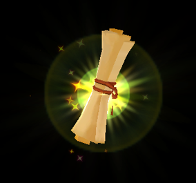
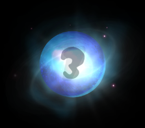
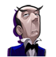
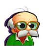
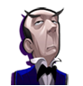
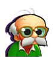

11 |
Reglas básicas e información |
 |
Reglas básicas Los cuatro personajes se turnarán para golpear la bola de cristal. El resultado de la bola de cristal determina cuántas casillas avanzarán en el tablero. Mientras el vehículo se mueve por el tablero siguiendo el número indicado por la bola de cristal, los jugadores pueden mover sus cursores sobre las monedas y las gemas para recogerlas. Cuando el vehículo se detenga en una casilla en la que se ganan o pierden monedas, cada jugador recibirá o perderá la cantidad indicada. El coste del pergamino se reparte entre todos los jugadores; la penalización por una contraseña errónea también se reparte entre los cuatro jugadores. Los jugadores solo pueden conseguir cantidades distintas de dinero cuando recogen monedas y gemas cada uno por separado durante un minijuego o en un desafío del tablero. Si el vehículo está completamente destrozado y los jugadores no tienen las 500 monedas que cuesta repararlo, perderán la partida. Cuando los jugadores adivinen la contraseña correcta, ganarán la partida y conseguirán el tesoro de Fazzy. Entonces jugarán el minijuego final, la Carrera Final, y se clasificarán según la cantidad de dinero que hayan reunido. Los jugadores también conseguirán un trofeo y un título dependiendo de cómo hayan jugado. Por ejemplo, quien tenga la mayor puntuación se convertirá en Capitán de la mansión. Cuando los jugadores introduzcan una contraseña errónea, perderán 200 monedas (si un jugador no tiene suficiente dinero, los otros pagarán más o menos en relación a la cantidad que hayan acumulado) y seguirán jugando. Pero si pierden todas sus monedas, se acabará la partida. Tras reunir 5 pistas, pueden elegir ‘Contes.’ para adivinar la contraseña correcta o reiniciar sus pistas y la contraseña y seguir jugando. Pero si los jugadores han conseguido menos de 5 pistas, tienen tres opciones: intentar responder la contraseña correcta, reiniciar sus pistas y la contraseña y seguir jugando o seguir sin reiniciar. ¡Atención! Reiniciar las pistas y la contraseña cuesta 200 monedas. ¡Si los jugadores no tienen suficiente dinero, solo tendrán dos opciones: continuar la partida o probar una respuesta! Información básica
El usuario puede elegir entre cuatro personajes para jugar: un chico, una chica, un mayordomo y un anciano.
Fazzy es un amigo que da consejos a los jugadores durante la historia y también les vende pistas.
Los cuatro jugadores toman asiento en el carruaje linterna Magic Jack que les proporciona Fazzy y avanzan juntos. Durante El Desafío, los fantasmas pueden disparar al vehículo y también dañarlo. Cuando el vehículo está completamente destrozado, los jugadores deben pagar 500 monedas para repararlo inmediatamente. Si los jugadores no tienen suficiente dinero, se acaba la partida. Cuando el vehículo esté dañado (pero no destrozado) los jugadores solo pueden repararlo cuando pasen por una casilla de Reparar. Cuando sea el turno de un jugador real para golpear la bola de cristal, puede verificar el nivel de daños del vehículo poniendo el cursor sobre él.  Los pergaminos mágicos proporcionan pistas para descifrar la contraseña final que permite acceder al tesoro.
El Fantasma Hechicero puede encoger a los jugadores para que puedan acceder a zonas especiales. En cuanto los jugadores salgan de esas zonas especiales, el Fantasma Hechicero los devolverá a su tamaño normal. El Fantasma Hechicero solo aparece en las entradas de algunos lugares especiales.  El icono de la bola de cristal determina cuántas casillas se mueve el vehículo. Los iconos de información básica del personaje están en las esquinas de la pantalla. Puedes ver la información sobre el jugador y la cantidad de dinero ganada. |
 



 |
 |
 |